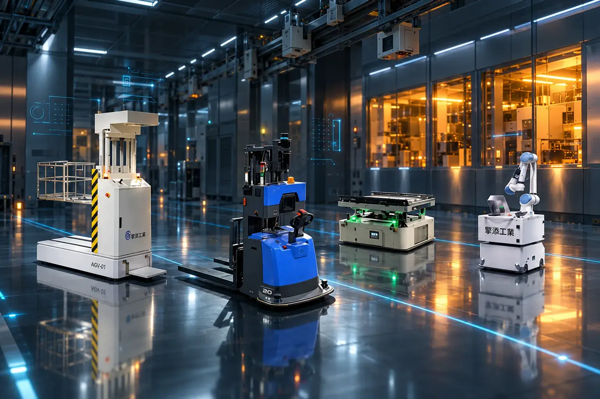
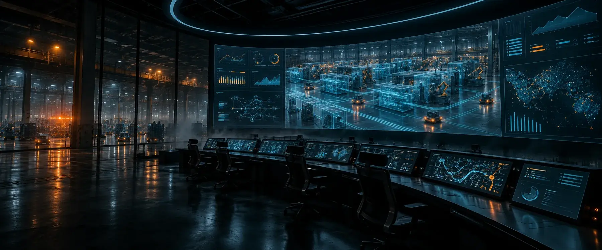
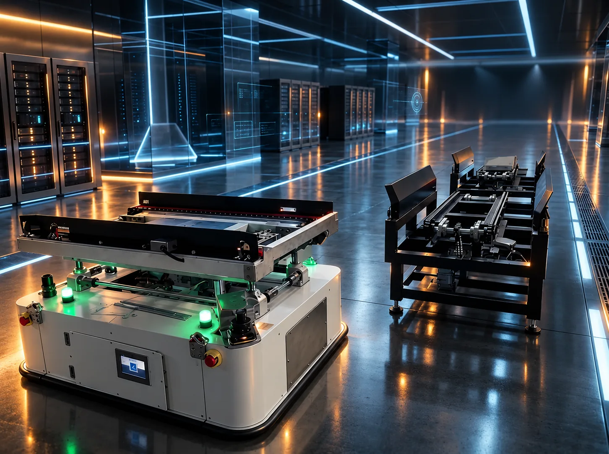
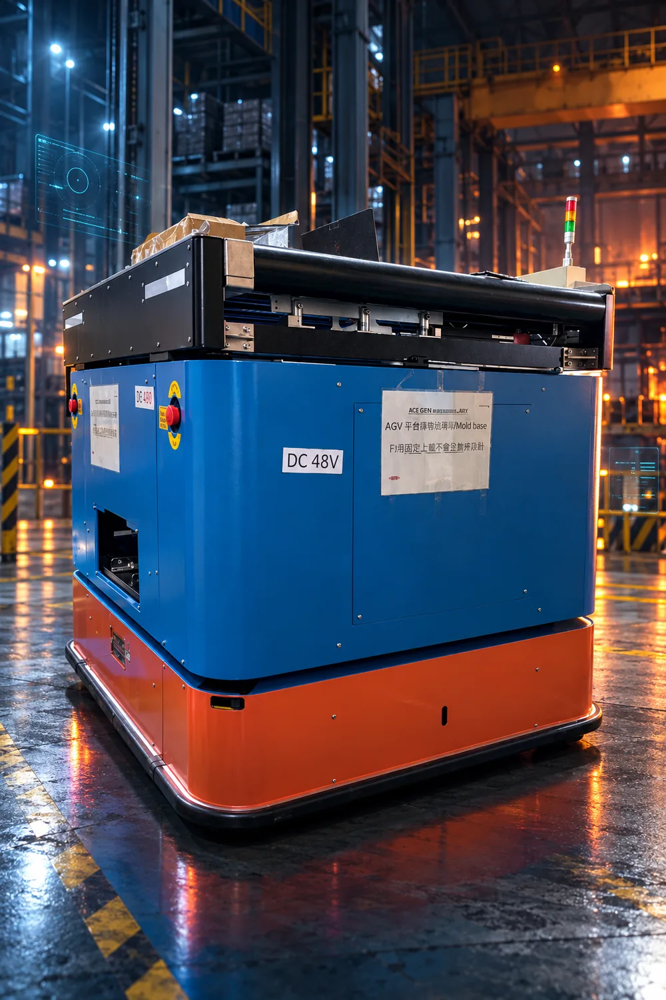
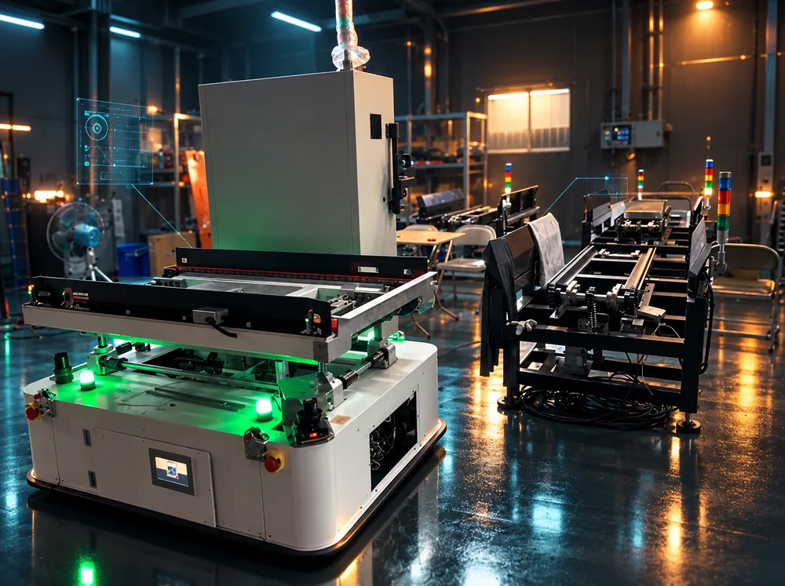
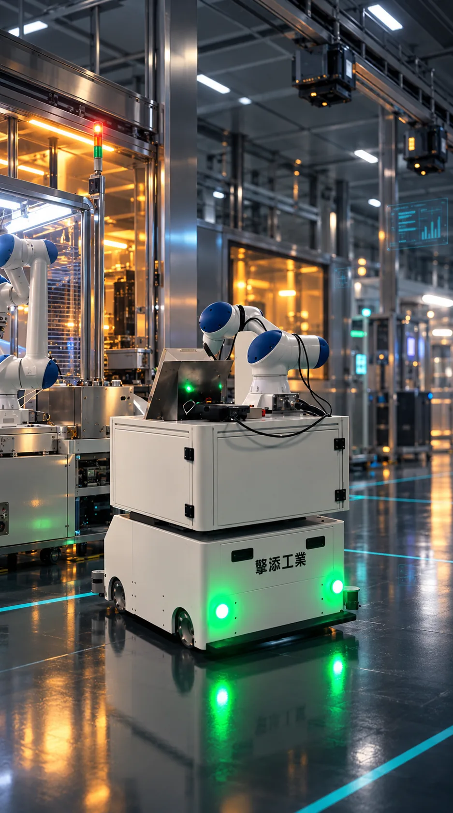
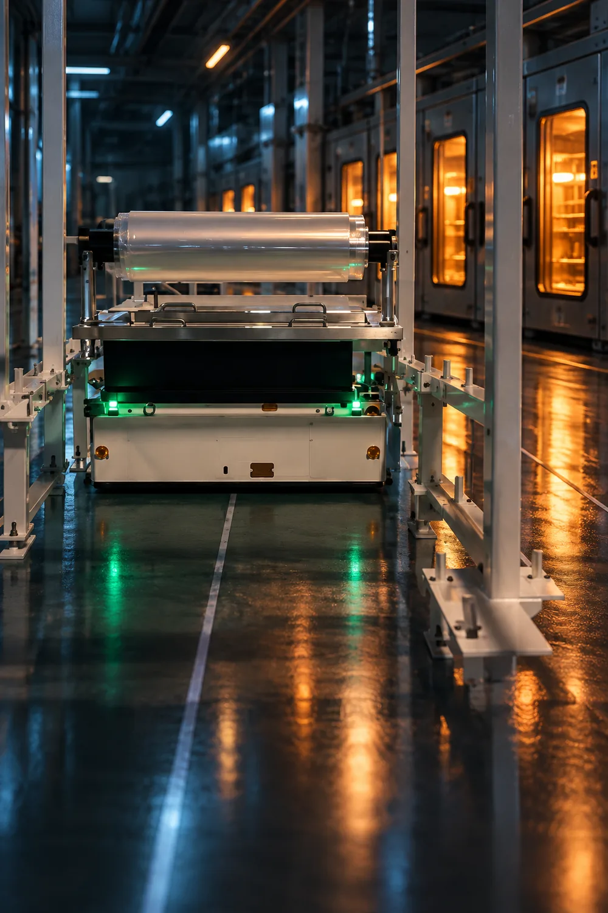
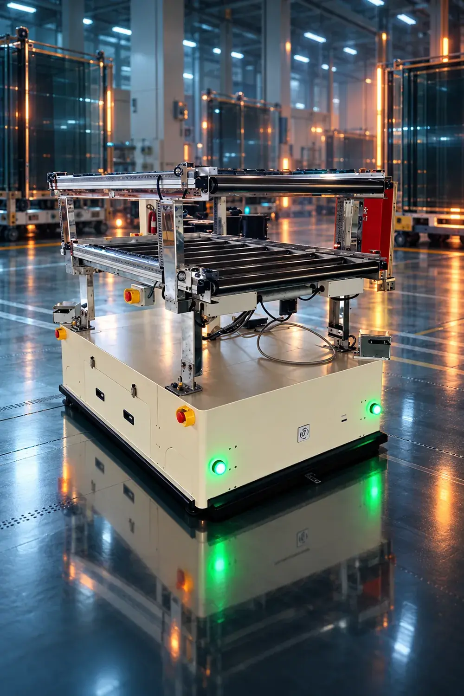
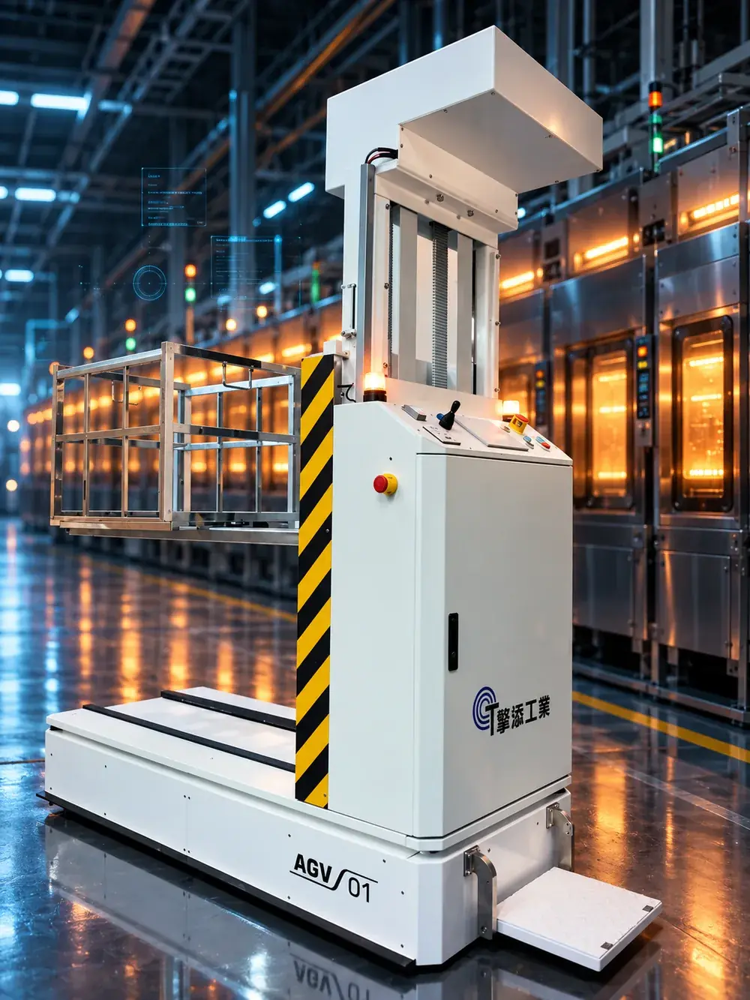

1984 創立於新北五股
擎添工業有限公司創立於 1984 年，為台灣專業的工業自動化解決方案供應商。我們專精於為機械製造商及各類產業提供客製化的自動控制系統與電氣生產服務。


1984 創立於新北五股
擎添工業有限公司創立於 1984 年，為台灣專業的工業自動化解決方案供應商。我們專精於為機械製造商及各類產業提供客製化的自動控制系統與電氣生產服務。
四十年的累積
在電腦監控系統與自動控制技術領域擁有卓越的專業能力，致力於協助客戶建構符合工業 4.0 標準的智慧工廠，實現企業的智慧製造轉型目標。
2025 把 AI 帶進工廠
不只傳統自動化。擎添助理 LINE AI Bot 與 ChingTech OS 智慧管理系統，讓 AI 成為企業升級的加速引擎。
探索 AI 升級方案提供從標準型到超重載型（最高 2000 公斤）的自動導引車解決方案。結合高精度定位與智能調度，實現工廠物流全面自動化。

半導體、面板、光學與電子廠，每一次對位都要精準，每一次移動都要安靜。
半導體封測面板廠光學科技

金屬加工、重型烤箱與大型設備，載得動、停得穩、跑得久。
金屬加工PCB 板廠自動倉儲 ASRS
提供從單機控制到整廠智慧化的一站式解決方案
精密控制技術整合，為各類機械設備提供穩定的控制核心。
量身訂製電氣解決方案，滿足特殊製程需求。
即時監控與數據管理，實現生產透明化。
機器人自動化應用，提升生產彈性與效率。整合多品牌機械手臂（如 KUKA、FANUC、YASKAWA 等），打造高效能自動化工作站。
焊接、搬運、組裝、塗膠等製程自動化。導入協作型機器人，安全提升生產彈性。針對特殊製程需求進行邏輯開發與優化。
AGV/AMR 智慧物流，串聯廠內物料流動。
大數據應用與優化，提供決策輔助。
全方位數位轉型，建置現代化智慧生產環境。
跨平台、跨品牌整合能力，確保無縫協同運作。
掌握自主研發關鍵技術，持續創新，從底層控制到上層管理系統，提供全方位的技術支援。
精通多品牌 PLC 與高階運動控制算法
工廠監控管理系統與戰情室規劃
設備聯網、數據採集與 MES 整合
嚴謹的標準化作業，確保專案如期如質達成目標。
現場勘查
跨足多元產業，深獲國內外知名企業信賴
產線自動化與無人搬運系統
潔淨室
重載型 AGV (2000KG)
重工重載 AGV (600KG) ASRS 系統
重工
台灣安川智慧產線
潔淨室精密加工自動化
精密
烤箱料架 AGV 倉儲系統
潔淨室
自動化物料搬運
潔淨室
重型烤箱自動化
重工擎添助理 LINE AI Bot．ChingTech OS 智慧管理系統。讓 AI 成為企業升級的加速引擎。
探索 AI 升級方案有任何自動化需求或專案諮詢？歡迎隨時聯繫我們，擎添專業團隊將竭誠為您服務。
(02) 2903-2788 chieu@ms43.hinet.net